# Worle data
worle <- readRDS("Data/Worle_curated.RDS")
# set taxa to ASV, otherwise uses the sequence as taxa name
taxa_names(worle) <- paste0("ASV", seq(ntaxa(worle)))
# rename NA taxa as "Unclassified"
Tax.Table <- data.frame(tax_table(worle)) %>%
replace(is.na(.), "Unclassified")
# replace tax table
tax_table(worle) <- as.matrix(Tax.Table)Prairie Strips Impact on Transport of Antibiotic Resistance Indicators in Poultry Manure
2/15/2021
Introduction
This code was used to generate figures for a publication titled: Prairie Strips Impact on Transport of Antibiotic Resistance Indicators in Poultry Manure
The manuscript is available here:
The project was designed to evaluate if the conservation practice of planting strips of prairie grasses within agricultural fields might attenuate the transport of manure associated genes and bacteria.
Poultry manure was applied to small plots appended with prairie strips and rainfall was simulated on the manure applied ground. Runoff water samples were collected after passing through the prairie strip and soil samples were collected before and after the rainfall simulation. In both soil and water samples we looked for and tracked the presence and abundance of manure associated bacteria and genes.
Figure 1
Figure was is a taxonomic profile of the bacteria present in the poultry manure that was used as a fertilizer. Manure was applied to six of nine plots, two plots received manure each day of a rainfall simulation. Rainfall simulations were performed on the nine plots over three days, one day each for a block of plots. Each block contained one plot from each treatment. The treatments were:
Crop + Strip (CS)
Crop + Strip + Manure (CSM)
Crop + Manure (CM)
The manure applied to each plot came from a single ~ 60 lbs batch of manure. When manure was applied to each plot, a sample of manure was taken to be analyzed for bacteria and antibiotic resistance genes. To track manure associated bacteria, we must first characterize the bacteria present. Here we have six manure samples and a bar plot representing the relative abundance of bacterial phyla in each sample. This data was generated using NGS sequencing of the 16S gene and analyzed using DADA2 to generate a count of the different taxa present in the various samples from the rainfall simulation.
16S Figures
First, visualize differences in communities by plotting PCoA ordination of the Bray-Curtis dissimilarity
colnames(sample_data(worle)) [1] "unique_id" "experiment" "matrix" "treatment"
[5] "plot" "sample_day" "depth" "in_plot_location"
[9] "block" "strip" "manure_treatment" "soil_type" sample_data(worle)$treatment[is.na(sample_data(worle)$treatment)] <- "manure"
pcoa <- pcoa_phyloseq(worle, c('matrix', 'treatment'), circle = T) +
scale_fill_viridis_d() +
theme_minimal()Scale for 'fill' is already present. Adding another scale for 'fill', which
will replace the existing scale.pcoa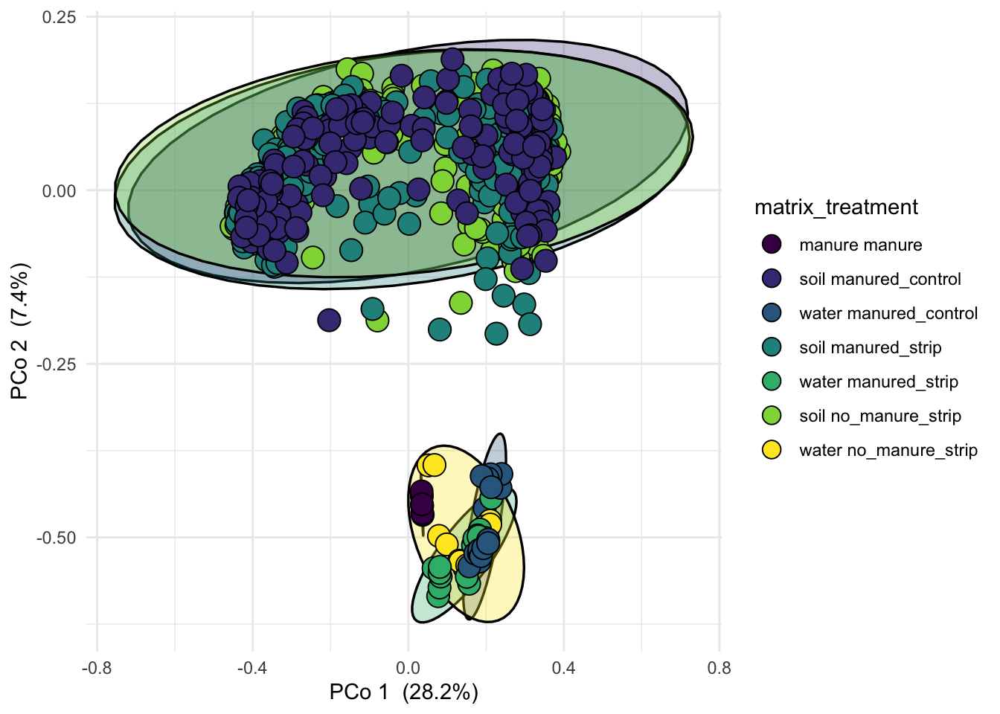
ggsave(filename = "Figures/PCoA.jpeg", plot = pcoa, device = "jpeg", width = 7.0, height = 6.0, units = "in", dpi = 350)worle.manure <- subset_samples(worle, matrix == "manure") %>% # subset to manure
filter_taxa(function(x) sum(x) >= 1, T) # Remove taxa observed less than once in these samplesAs we make plots of taxa, it’s easier to understand if consistent colors are used for the various phyla. We can assign a color to each of these phyla then manually color plots based on this.
set.seed(010101)
# make a list of unique phyla
phylalist <- data.frame(tax_table(worle), row.names = NULL) %>%
select(Phylum) %>%
unique()
phylalist$Phylum <- as.character(phylalist$Phylum)
library(colorspace) # this package will generate a palette based on number and desired colors
# assign color from "viridis" package to each phyla and name the list with phyla names
colors <- sequential_hcl(n_distinct(phylalist), palette = "viridis") %>%
setNames(sort(phylalist$Phylum))Figure 1
Let’s calculate the relative abundance of each phyla in the manure and generate summary statistics (mean, standard error, and interquartile range) ::: {.cell hash=“ManuscriptWalkthrough_cache/html/figure 1 plots_92386224e66a6e3b36ddb4facb2095b8”}
global_size = 12 # Font size
phydf <- worle.manure %>%
tax_glom(taxrank = "Phylum") %>%
transform_sample_counts(function(x) x / sum(x)) %>%
psmelt() # Take manure phyloseq object and glom taxa at phyla level. Transform counts to relative abundance and melt to a data frame.
summary <- phydf %>% # Make a plot
group_by(Phylum) %>%
summarise(
n=n(),
mean=mean(Abundance),
sd=sd(Abundance)
) %>%
mutate(se = sd/sqrt(n)) %>%
mutate(ic = se * qt((1-0.05)/2 + .5, n-1)) %>%
arrange(-mean)
summary$Phylum <- factor(summary$Phylum, levels = summary$Phylum[order(-summary$mean)]) # arrange won't change order of Phylum factor levels
p1 <- ggplot(summary) +
theme_classic() +
geom_bar(aes(x = Phylum, y = mean, fill = Phylum), stat = "identity",
position = position_dodge(width = 0.75)) +
geom_errorbar( aes(x = reorder(Phylum, -mean), ymin = mean - ic, ymax = mean + ic), width = 0.2, colour = "black", size= 0.5) +
labs(y = "Relative abundance of phyla", x = "Phylum") +
scale_fill_manual(values = colors) +
theme(legend.position = "none",
axis.text.x = element_text(angle = 45, hjust = 1)) +
scale_y_continuous(labels = function(x) paste0(x*100, "%")) +
geom_text(x = "Proteobacteria", y = 0.60, label = "A", size = 8, family = "Times") +
theme(text = element_text(size = global_size, family = "Times"))
p1
# We can make a second smaller plot to show the abundances of the low abundance phyla
p2 <- ggplot(subset(summary, Phylum %in% tail(summary$Phylum, -5))) +
theme_classic() +
geom_bar(aes(x = reorder(Phylum, -mean), y = mean, fill = Phylum), stat = "identity",
position = position_dodge(width = 0.75)) +
geom_errorbar( aes(x = reorder(Phylum, -mean), ymin = mean - ic, ymax = mean + ic), width = 0.2, colour = "black", size= 0.5) +
labs(x = NULL, y = NULL) +
scale_fill_manual(values = colors) +
theme(legend.position = "none",
axis.text.x = element_text(angle = 45, hjust = 1)) +
scale_y_continuous(labels = function(x) paste0(x*100, "%")) +
geom_text(x = "Tenericutes", y = 0.0060, label = "B", size = 8, family = "Times") +
theme(text = element_text(size = global_size, family = "Times"))
p2
p3 <- p1 + annotation_custom(ggplotGrob(p2), xmin = "Deinococcus-Thermus", xmax = "Deferribacteres", ymin = .05, ymax = .65)
p3
:::
We can see that the manure is mostly represented by five phyla, Firmicutes, Proteobacteria, Bacteroidetes, Actinobacetria, and Deinococcus-Thermus.
# Use ggsave to save plot. I chose 6.5" wide because most word docs are 8.5" with 2 x 1" margins. Keep the height below 9.5" to save room for a caption. When you insert into your document, change the size to 6.5" wide to ensure that the plot looks visually the same.
ggsave(filename = "Figures/Fig1.jpeg", plot = last_plot(), device = "jpeg", width = 7.0, height = 6.0, units = "in", dpi = 350)The specific abundances of phyla are:
phydf %>%
group_by(Phylum) %>%
summarise(Mean = mean(Abundance), StdDev = sd(Abundance), min = min(Abundance), max = max(Abundance)) %>%
arrange(-Mean)# A tibble: 20 x 5
Phylum Mean StdDev min max
<chr> <dbl> <dbl> <dbl> <dbl>
1 Firmicutes 0.555 0.0907 0.441 0.678
2 Proteobacteria 0.200 0.0668 0.124 0.294
3 Bacteroidetes 0.126 0.0483 0.0714 0.191
4 Actinobacteria 0.0890 0.0170 0.0669 0.105
5 Deinococcus-Thermus 0.0187 0.00770 0.00633 0.0261
6 Chloroflexi 0.00405 0.00262 0.00185 0.00842
7 Tenericutes 0.00173 0.00166 0.0000728 0.00455
8 Planctomycetes 0.000927 0.000411 0.000337 0.00137
9 Unclassified 0.000871 0.00116 0 0.00329
10 Euryarchaeota 0.000706 0.00108 0 0.00289
11 Verrucomicrobia 0.000526 0.000602 0 0.00158
12 Acidobacteria 0.000353 0.000303 0 0.000705
13 Synergistetes 0.000261 0.000548 0 0.00137
14 Elusimicrobia 0.000195 0.000385 0 0.000962
15 Fusobacteria 0.000153 0.000272 0 0.000670
16 candidate_division_WPS-1 0.000110 0.000160 0 0.000407
17 Cloacimonetes 0.0000796 0.000142 0 0.000351
18 Armatimonadetes 0.0000506 0.0000659 0 0.000166
19 Spirochaetes 0.0000281 0.0000688 0 0.000169
20 Deferribacteres 0.0000123 0.0000302 0 0.0000740Supp Figure S2
Abundance of manure associated taxa
Now let’s look at the number of unique taxa in the various samples.
# strip subset, all strip soil from baseline samples in addition to no_manure_strip treatment, note the | operator
worle.strip <- subset_samples(worle, matrix == "soil" & sample_day == "Baseline" & soil_type == "strip" |
matrix == "soil" & treatment == "no_manure_strip" & soil_type == "strip") %>%
filter_taxa(function(x) sum(x) >= 1, T)
worle.crop <- subset_samples(worle, matrix == "soil" & sample_day == "Baseline" & soil_type == "crop" |
matrix == "soil" & treatment == "no_manure_strip" & soil_type == "crop") %>%
filter_taxa(function(x) sum(x) >= 1, T)
worle.border <- subset_samples(worle, matrix == "soil" & sample_day == "Baseline" & soil_type == "border" |
matrix == "soil" & treatment == "no_manure_strip" & soil_type == "border") %>%
filter_taxa(function(x) sum(x) >= 1, T)
worle.manure <- subset_samples(worle, matrix == "manure") %>%
filter_taxa(function(x) sum(x) >= 1, T)
worle.water <- subset_samples(worle, matrix == "water" & unique_id != "Comp-from-P8-7-10-26-17") %>%
filter_taxa(function(x) sum(x) >= 1, T)# Make a list of ASVs associated with each type of soil and manure
worle_manure_asvs <- taxa_names(worle.manure)
worle_crop_soil_asvs <- taxa_names(worle.crop)
worle_strip_soil_asvs <- taxa_names(worle.strip)
worle_border_asvs <- taxa_names(worle.border)
worle_water_asvs <- taxa_names(worle.water)
# venn diagram
worle_vvv_diag <- venn(list("Manure_ASVs" = worle_manure_asvs, "Crop_ASVs" = worle_crop_soil_asvs, "Strip_ASVs" = worle_strip_soil_asvs, "Border_ASVs" = worle_border_asvs))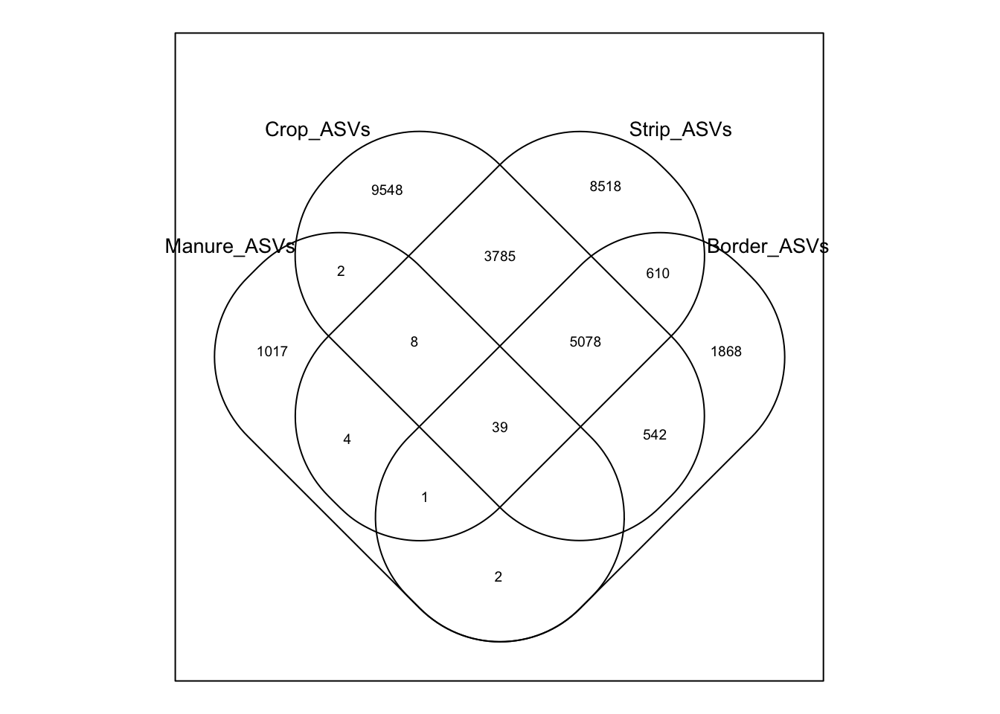
# Access ASVs unique to each soil and manure and store
worle_manure_persitors <- attr(worle_vvv_diag, "intersections")$Manure_ASVs
worle_crop_persistors <- attr(worle_vvv_diag, "intersections")$Crop_ASVs
worle_strip_persistors <- attr(worle_vvv_diag, "intersection")$Strip_ASVs
worle_border_persistors <- attr(worle_vvv_diag, "intersections")$Border_ASVsWe have 1017 “MAB” taxa
Sample_Type <- c("Manure", "Crop", "Strip", "Border")
Number_of_taxa <- c(ntaxa(worle.manure), ntaxa(worle.crop), ntaxa(worle.strip), ntaxa(worle.border))
Taxa_unique_to <- c(length(worle_manure_persitors), length(worle_crop_persistors), length(worle_strip_persistors), length(worle_border_persistors))
df <- data.frame(Sample_Type, Number_of_taxa, Taxa_unique_to)
df Sample_Type Number_of_taxa Taxa_unique_to
1 Manure 1073 1017
2 Crop 19002 9548
3 Strip 18043 8518
4 Border 8140 1868Make a taxonomy table of the ASVs unique to manure
MAB <- tax_table(worle.manure) %>%
data.frame() %>%
rownames_to_column("ASV") %>%
filter(ASV %in% worle_manure_persitors)
head(MAB) ASV Kingdom Phylum Class Order
1 ASV4 Bacteria Firmicutes Bacilli Bacillales
2 ASV184 Bacteria Firmicutes Bacilli Bacillales
3 ASV187 Bacteria Firmicutes Bacilli Bacillales
4 ASV244 Bacteria Firmicutes Bacilli Lactobacillales
5 ASV246 Bacteria Actinobacteria Actinobacteria Actinomycetales
6 ASV269 Bacteria Firmicutes Bacilli Bacillales
Family Genus
1 Bacillaceae_2 Unclassified
2 Bacillaceae_2 Oceanobacillus
3 Bacillaceae_2 Unclassified
4 Enterococcaceae Enterococcus
5 Corynebacteriaceae Corynebacterium
6 Bacillaceae_2 Unclassifiedwrite.table(MAB, file = "Tables/MAB.csv", sep = ",", col.names = T,
qmethod = "double", row.names = F)ggvenn(list("Manure" = worle_manure_asvs, "Crop" = worle_crop_soil_asvs, "Strip" = worle_strip_soil_asvs, "Border" = worle_border_asvs), set_name_size = 4, show_percentage = F) + scale_fill_viridis_d()Scale for 'fill' is already present. Adding another scale for 'fill', which
will replace the existing scale.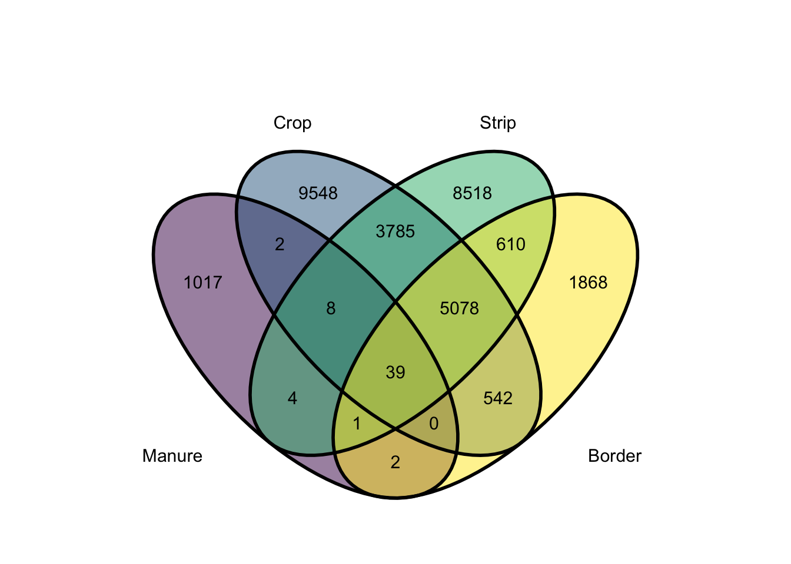
ggsave("Figures/SuppFig2.png", plot = last_plot(), units = "in", width = 6.5, dpi = 300)Saving 6.5 x 5 in imageWe will assign taxa to two groups, soils associated and manure associated bacteria: “SAB” and “MAB”
tax_association <- tax_table(worle.water) %>%
data.frame() %>%
rownames_to_column("ASV") %>%
mutate(ASV_Association = ifelse(ASV %in% worle_manure_persitors, "MAB","SAB")) %>%
mutate(asv = ASV) %>%
column_to_rownames("ASV") %>%
rename(ASV = asv) %>%
as.matrix()
tax_table(worle.water) <- tax_associationNow subset water samples to just “MAB”.
# Due to sequencing depth, we have a few MAB detected in CS plots, let's note them and remove them for "clean" plot.
ASVsinCS <- subset_samples(worle.water, treatment == "no_manure_strip") %>%
subset_taxa(ASV_Association == "MAB") %>%
psmelt()
ASVsinCS <- ASVsinCS %>%
filter(Abundance > 0) %>%
select(OTU, Abundance, Phylum, Class, Order, Family, Genus)
removeASVs <- ASVsinCS$OTU
cleanwater <- subset_taxa(worle.water, !ASV %in% removeASVs)
sp <- cleanwater %>%
transform_sample_counts(function(x) x / sum(x)) %>%
subset_taxa(ASV_Association == "MAB")
spphyloseq-class experiment-level object
otu_table() OTU Table: [ 489 taxa and 51 samples ]
sample_data() Sample Data: [ 51 samples by 12 sample variables ]
tax_table() Taxonomy Table: [ 489 taxa by 8 taxonomic ranks ]
refseq() DNAStringSet: [ 489 reference sequences ]Figure 2
p <- phylogeny_profile(sp, classification = 'Phylum', treatment = c("treatment"), merge = TRUE, relative_abundance = F) +
facet_nested(. ~ treatment + plot, scales = "free", space = "free") +
theme(axis.text.x = element_text(angle = 90, vjust = 0.5, hjust=1),
legend.position = "top") +
guides(fill = guide_legend(ncol=3)) +
labs(y = "Relative abundance of MAB") +
scale_x_discrete()Scale for 'x' is already present. Adding another scale for 'x', which will
replace the existing scale.df <- p$data %>%
separate(col = unique_id, into = c("p", "time"), sep = "-")
levels(df$treatment) <- c("CL", "CSL", "CS")
df$treatment <- ordered(df$treatment, levels = c("CS", "CSL", "CL"))
breaks <- df %>%
filter(plot == 4, time == 3) %>%
group_by(Phylum) %>%
summarise(mean = mean(Abundance)) %>%
arrange(mean) %>%
select(Phylum)
df$Phylum <- factor(df$Phylum, levels = breaks$Phylum)
mabbarplot <- ggplot(data = df, aes(x = time, y = Abundance, fill = Phylum)) +
geom_bar(stat = "identity", colour = "black") +
facet_nested(. ~ treatment + plot, scales = "free", space = "free") +
theme_classic() +
theme(
text = element_text(size = global_size, family = "Times"),
legend.position = "top",
panel.background = element_rect(color = 'black', size = 1.4),
strip.text.x = element_text(size = 10, face = 'bold'),
strip.background = element_rect(colour = 'black', size = 1.4),
axis.text.x = element_text(angle = 90, vjust = 0.5, hjust=1)) +
scale_fill_manual(aesthetics = "fill", values = subset(colors, names(colors) %in% df$Phylum), breaks = breaks$Phylum) +
labs(x = "Sample time (min) after runoff", y = "Relative abundance of LAB") +
scale_x_discrete(labels = c("1" = "2.5", "2" = "7.5", "3" = "12.5", "4" = "17.5", "5" = "22.5", "6" = "27.5")) +
scale_y_continuous(labels = function(x) paste0(x*100, "%")) +
guides(fill = guide_legend(nrow = 4))
mabbarplot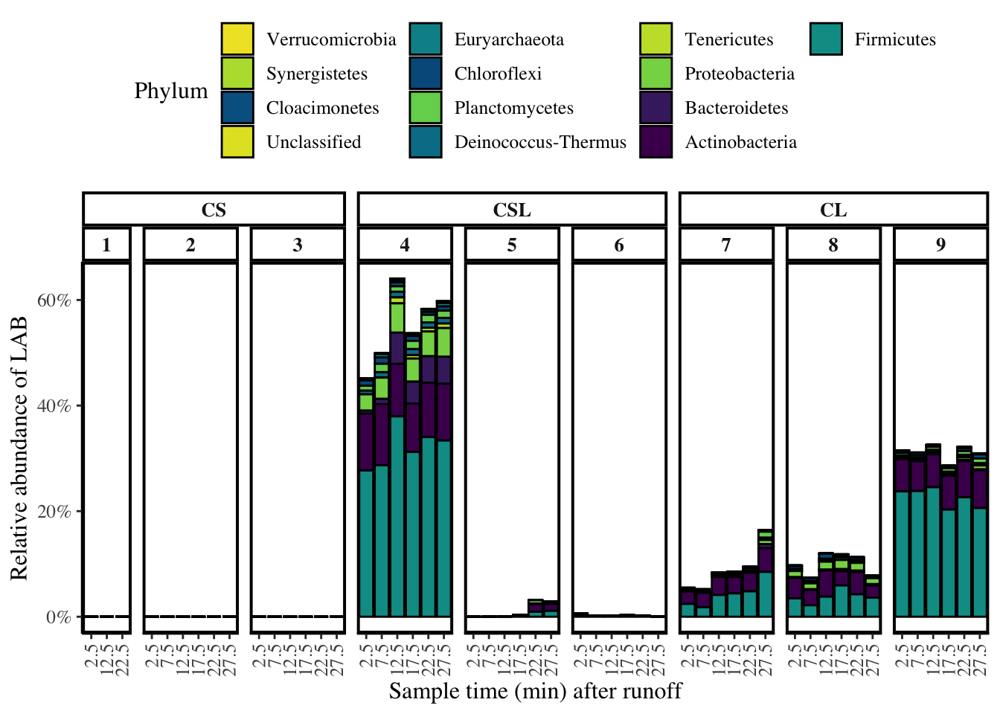
The relative abundance of phyla that represent the “MAB” taxa detected in runoff water.
ggsave(filename = "Figures/Fig2.jpeg", plot = last_plot(), device = "jpeg", width = 7, height = 6, units = "in", dpi = 350)Figure 3
Only plot 8 most abundant phyla to keep plot cleaner
summary <- df %>%
filter(!treatment == "CS") %>% # Remove no manure treatment
group_by(Phylum,
plot,
treatment) %>%
summarise(
n=n(),
mean=mean(Abundance),
sd=sd(Abundance)) %>%
mutate(se = sd/sqrt(n)) %>%
mutate(ic = se * qt((1-0.05)/2 + .5, n-1)) %>%
arrange(plot, -mean) %>%
ungroup()`summarise()` has grouped output by 'Phylum', 'plot'. You can override using the `.groups` argument.EightPhyla <- summary %>%
group_by(Phylum) %>%
mutate(mean = mean(mean)) %>%
arrange(-mean) %>%
select(Phylum) %>%
distinct() %>%
head(8) # Use head with n = 8 to select eight phyla
summary$plot <- as.factor(summary$plot)
summary <- summary %>%
filter(Phylum %in% EightPhyla$Phylum)
ggplot(summary, aes(x = reorder(Phylum, -mean), y = mean, fill = plot)) +
geom_bar(stat = "identity",
position = position_dodge(width = 1)) +
geom_errorbar(aes(x = reorder(Phylum, -mean), ymin = mean - ic, ymax = mean + ic),
position = position_dodge(width = 1), width = 0.2, colour = "black", size= 0.5) +
labs(y = "Relative abundance of phyla", x = "Phylum") +
facet_grid( ~ treatment) +
theme_classic() +
theme(text = element_text(size = global_size, family = "Times"),
axis.text.x = element_text(angle = 90, hjust = 1)) +
scale_fill_viridis_d(name = "Plot") +
scale_y_continuous(labels = function(x) paste0(x*100, "%")) # Here we can multiply the relative abundance by 100 and add a % mark, note that any tables generated will still need to be multiplied by 100. 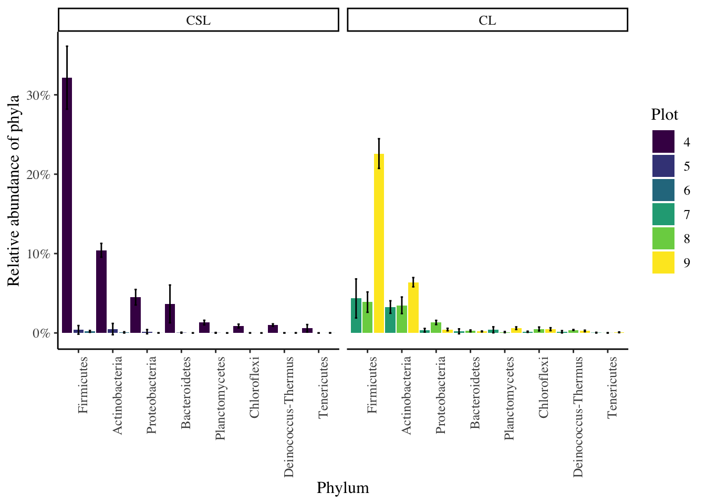
ggsave(filename = "Figures/Fig3.jpeg", plot = last_plot(), device = "jpeg", width = 7, height = 6, units = "in", dpi = 350)LAB treatment mean ::: {.cell hash=“ManuscriptWalkthrough_cache/html/unnamed-chunk-26_3bab828b21c571d2e8da0531b5f4b565”}
df %>%
group_by(treatment, plot, time) %>%
summarise(
MAB_Abundance = sum(Abundance)) %>%
ungroup() %>%
group_by(treatment, plot) %>%
summarise(
mean_mab = mean(MAB_Abundance)) %>%
ungroup() %>%
group_by(plot) %>%
summarise(trtMeanMab = mean(mean_mab))`summarise()` has grouped output by 'treatment', 'plot'. You can override using the `.groups` argument.`summarise()` has grouped output by 'treatment'. You can override using the `.groups` argument.# A tibble: 9 x 2
plot trtMeanMab
<dbl> <dbl>
1 1 0
2 2 0
3 3 0
4 4 0.552
5 5 0.0110
6 6 0.00284
7 7 0.0893
8 8 0.100
9 9 0.312 :::
ARG Figures
library(tidyverse)
library(viridisLite)
library(ggh4x)
library(ggpubr)
library(rstatix)
library(ggtext)df <- readRDS("Data/metawithbiomark.RDS") standard <- df %>%
filter(sample_type %in% "standard")PC_Standards_no_NA <- readRDS("Data/ampliconlengths.RDS")
PC_Standards_no_NA# A tibble: 46 x 3
gene Assay amp_len
<chr> <chr> <chr>
1 aadA9_F aadA9 251
2 ant6-ia_F ant6-ia 313
3 ant6-ib_F ant6-ib 251
4 aph(3'')-ia_F aph(3'')-ia 301
5 erm(35)_F erm(35) 251
6 erm(B)_F erm(B) 251
7 erm(C)_F erm(C) 251
8 erm(F)_F erm(F) 251
9 erm(Q)_F erm(Q) 287
10 ermA/ermTR_F ermA/ermTR 251
# … with 36 more rowsCalculating limit of detection for each gene
filtered_standard <- standard %>%
filter(Sample_Name == Assay)
lod_max_by_gene <- filtered_standard %>%
group_by(rConc, Sample_Name) %>%
filter(any(Call == "Pass")) %>%
mutate(Value = as.numeric(Value)) %>%
filter(!Call == "Flag") %>%
summarise(max_lod = max(Value)) %>%
group_by(Sample_Name) %>%
slice_max(max_lod) `summarise()` has grouped output by 'rConc'. You can override using the `.groups` argument.lod_max_by_gene %>%
ggplot(aes(Sample_Name, max_lod)) +
geom_col(aes(fill = rConc)) +
theme_light() +
theme(
axis.text.x = element_text(angle = 90, hjust = 1)
) +
scale_y_continuous(expand = expansion(add = c(0, 0), mult = c(0, 0.1))) 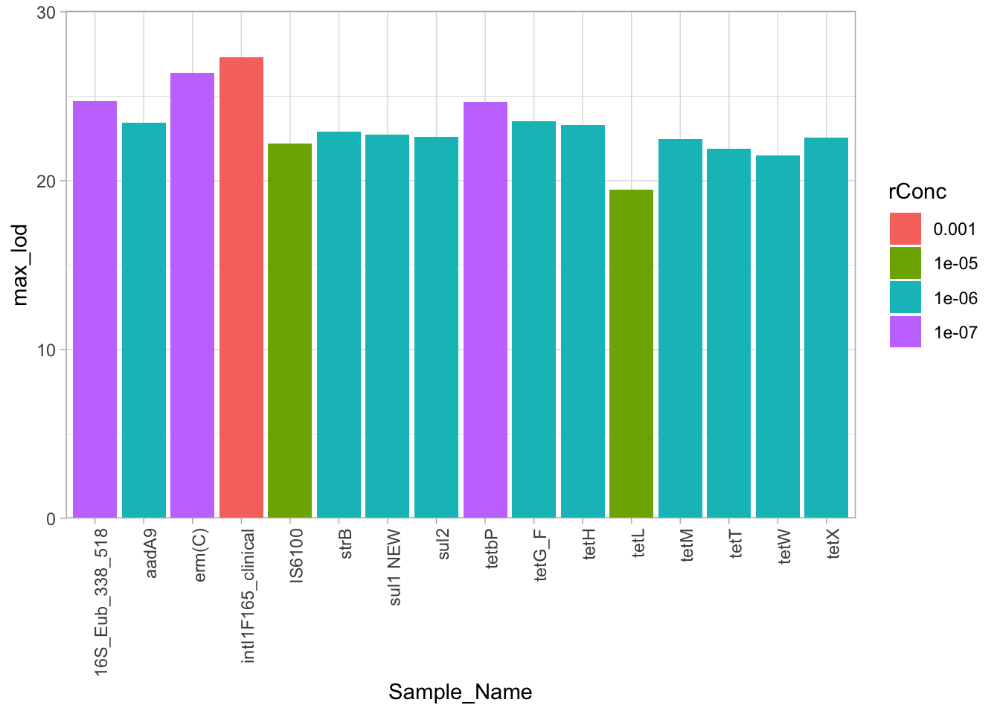
counts <- filtered_standard %>%
group_by(rConc, Sample_Name) %>%
filter(any(Call == "Pass")) %>%
select(Sample_Name, Assay, rConc, Value, Call) %>%
ungroup() %>%
filter(!Call == "Flag") %>%
left_join(PC_Standards_no_NA) %>%
select(Assay, rConc, Value, amp_len) %>%
mutate(counts = as.numeric(rConc) * (1/(10^9)) * (1/660) * ((6.023*10^23)/1) * (1/as.numeric(amp_len)) * (.0067)) %>%
mutate(Value = as.numeric(Value))Joining, by = "Assay"lod_max_by_gene# A tibble: 16 x 3
# Groups: Sample_Name [16]
rConc Sample_Name max_lod
<chr> <chr> <dbl>
1 1e-07 16S_Eub_338_518 24.7
2 1e-06 aadA9 23.4
3 1e-07 erm(C) 26.4
4 0.001 intI1F165_clinical 27.3
5 1e-05 IS6100 22.2
6 1e-06 strB 22.9
7 1e-06 sul1 NEW 22.7
8 1e-06 sul2 22.6
9 1e-07 tetbP 24.7
10 1e-06 tetG_F 23.5
11 1e-06 tetH 23.3
12 1e-05 tetL 19.5
13 1e-06 tetM 22.5
14 1e-06 tetT 21.9
15 1e-06 tetW 21.5
16 1e-06 tetX 22.6lm_eqn = function(df){
m = lm(data = df, formula = as.numeric(Value) ~ log10(counts + 1))
b = coef(m)[2]
data.frame(
eff = round(100*((10^(-1/b))-1), digits = 2),
r2 = format(summary(m)$r.squared, digits = 3),
LOD = round(max(df$Value), digits = 2),
Intercept = round(coef(m)[1], digits = 2),
Slope = round(coef(m)[2], digits = 2)
)
}
st_splits <- counts %>%
group_by(Assay) %>%
group_split()
eqs <- st_splits %>%
lapply(., lm_eqn) %>%
bind_rows()
labels <- lapply(st_splits, slice_head, n = 1) %>%
bind_rows() %>%
select(Assay) %>%
bind_cols(eqs) %>%
mutate(eq_label = paste0("LOD = ", LOD, "<br>r^2 = ", r2, "<br>Efficiency = ", eff, "<br>Slope = ", Slope, "<br>Intercept = ", Intercept))
SCPlots <- counts %>%
ggplot(aes(as.numeric(log10(counts + 1)), as.numeric(Value))) +
geom_point() +
facet_wrap( ~ Assay, scales = "free") +
theme(
panel.border = element_rect(color = "black", size = 1, fill = NA),
panel.grid.minor.x = element_blank(),
panel.grid.minor.y = element_blank(),
panel.spacing = unit(0.5, "lines"),
strip.background = element_rect(color = "black", size = 1, fill = NA),
) +
labs(
x = "Log10 (gene copies per reaction)",
y = "Ct"
) +
scale_x_continuous(limits = c(0, 7), breaks = seq(0, 7, 1), expand = c(0, 0)) +
scale_y_continuous(limits = c(0, 25)) +
geom_smooth(aes(group=1), method="lm", se=FALSE) +
ggtext::geom_richtext(data = labels, aes(x = 2, y = 5, label = eq_label),
size = 4, fontface = "bold", inherit.aes = FALSE) +
theme(
text = element_text(size = 12, family = "Times"),
panel.background = element_rect(color = 'black', size = 1.4),
strip.text.x = element_text(size = 10, face = 'bold'),
strip.background = element_rect(colour = 'black', size = 1.4),
axis.text.x = element_text(angle = 90, vjust = 0.5, hjust=1),
legend.position = "top",
legend.key.width = unit(.75, "in")
)
SCPlots`geom_smooth()` using formula 'y ~ x'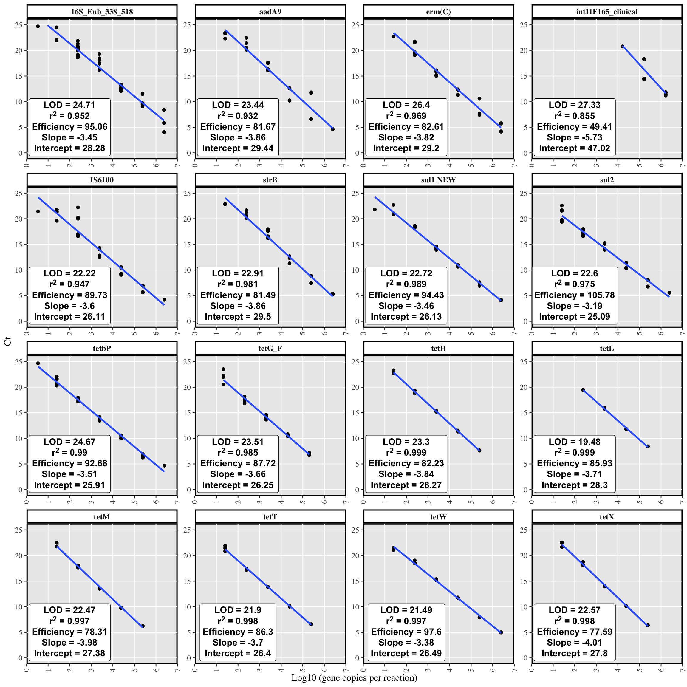
# Save a table of the information from each curve
LODtable <- labels %>%
select(!eq_label)
LODtable# A tibble: 16 x 6
Assay eff r2 LOD Intercept Slope
<chr> <dbl> <chr> <dbl> <dbl> <dbl>
1 16S_Eub_338_518 95.1 0.952 24.7 28.3 -3.45
2 aadA9 81.7 0.932 23.4 29.4 -3.86
3 erm(C) 82.6 0.969 26.4 29.2 -3.82
4 intI1F165_clinical 49.4 0.855 27.3 47.0 -5.73
5 IS6100 89.7 0.947 22.2 26.1 -3.6
6 strB 81.5 0.981 22.9 29.5 -3.86
7 sul1 NEW 94.4 0.989 22.7 26.1 -3.46
8 sul2 106. 0.975 22.6 25.1 -3.19
9 tetbP 92.7 0.99 24.7 25.9 -3.51
10 tetG_F 87.7 0.985 23.5 26.2 -3.66
11 tetH 82.2 0.999 23.3 28.3 -3.84
12 tetL 85.9 0.999 19.5 28.3 -3.71
13 tetM 78.3 0.997 22.5 27.4 -3.98
14 tetT 86.3 0.998 21.9 26.4 -3.7
15 tetW 97.6 0.997 21.5 26.5 -3.38
16 tetX 77.6 0.998 22.6 27.8 -4.01write_csv(LODtable, file = "Data/standardcurves.csv")Calculating counts in an environmental sample
counts# A tibble: 425 x 5
Assay rConc Value amp_len counts
<chr> <chr> <dbl> <chr> <dbl>
1 tetbP 1e-07 24.7 251 2.44
2 sul1 NEW 1e-07 21.8 251 2.44
3 IS6100 1e-07 21.4 251 2.44
4 erm(C) 1e-07 26.4 251 2.44
5 16S_Eub_338_518 1e-07 24.7 257 2.38
6 tetbP 1e-06 22.1 251 24.4
7 tetbP 1e-06 20.7 251 24.4
8 tetbP 1e-06 20.5 251 24.4
9 sul1 NEW 1e-06 22.7 251 24.4
10 sul1 NEW 1e-06 20.8 251 24.4
# … with 415 more rowsEnvironment Ct values
water <- df %>%
filter(sample_type %in% "water", !Sample_Name == "Supply_Water")
water# A tibble: 6,336 x 21
Sample_Name Sample_Type Assay Assay_Type ID rConc Value `Calibrated rCo…
<chr> <chr> <chr> <chr> <chr> <chr> <chr> <chr>
1 P2_5 Unknown 16S_E… Test S06-A… 1 18.3… 4.9938279547795…
2 P2_5 Unknown 16S_E… Test S06-A… 1 18.3… 5.0738800340691…
3 P2_5 Unknown 16S_E… Test S06-A… 1 17.7… 7.6293726452979…
4 P2_5 Unknown sul1 … Test S06-A… 1 999 -1
5 P2_5 Unknown sul1 … Test S06-A… 1 999 -1
6 P2_5 Unknown sul1 … Test S06-A… 1 999 -1
7 P2_5 Unknown erm(3… Test S06-A… 1 999 -1
8 P2_5 Unknown erm(3… Test S06-A… 1 999 -1
9 P2_5 Unknown erm(3… Test S06-A… 1 999 -1
10 P2_5 Unknown tetW Test S06-A… 1 999 -1
# … with 6,326 more rows, and 13 more variables: Quality <chr>, Call <chr>,
# Threshold <chr>, In Range <chr>, Out Range <chr>, Peak Ratio <chr>,
# soil_type <chr>, plot <chr>, treatment <chr>, block <chr>,
# sample_day <fct>, sample_number <chr>, sample_type <chr>soil <- df %>%
filter(sample_type %in% "soil")
soil# A tibble: 10,944 x 21
Sample_Name Sample_Type Assay Assay_Type ID rConc Value `Calibrated rCo…
<chr> <chr> <chr> <chr> <chr> <chr> <chr> <chr>
1 C_1_TB_1 Unknown 16S_E… Test S95-A… 1 15.1… 0.0001944385882…
2 C_1_TB_1 Unknown 16S_E… Test S95-A… 1 14.8… 0.0002366823806…
3 C_1_TB_1 Unknown 16S_E… Test S95-A… 1 14.9… 0.0002276031810…
4 C_1_TB_1 Unknown sul1 … Test S95-A… 1 999 -1
5 C_1_TB_1 Unknown sul1 … Test S95-A… 1 999 -1
6 C_1_TB_1 Unknown sul1 … Test S95-A… 1 999 -1
7 C_1_TB_1 Unknown erm(3… Test S95-A… 1 999 -1
8 C_1_TB_1 Unknown erm(3… Test S95-A… 1 999 -1
9 C_1_TB_1 Unknown erm(3… Test S95-A… 1 999 -1
10 C_1_TB_1 Unknown tetW Test S95-A… 1 999 -1
# … with 10,934 more rows, and 13 more variables: Quality <chr>, Call <chr>,
# Threshold <chr>, In Range <chr>, Out Range <chr>, Peak Ratio <chr>,
# soil_type <chr>, plot <chr>, treatment <chr>, block <chr>,
# sample_day <fct>, sample_number <chr>, sample_type <chr>unique(water$Sample_Name) [1] "P2_5" "P2_3" "P2_1" "P1_5" "P1_3" "P1_1" "P2_6" "P2_4" "P2_2" "P1_6"
[11] "P1_4" "P1_2" "P3_5" "P3_3" "P3_1" "P3_6" "P3_4" "P3_2" "P9_6" "P4_5"
[21] "P9_4" "P4_3" "P9_2" "P4_1" "P9_5" "P4_6" "P9_3" "P4_4" "P9_1" "P4_2"
[31] "P8_6" "P5_5" "P8_4" "P5_3" "P8_2" "P5_1" "P8_5" "P5_6" "P8_3" "P5_4"
[41] "P8_1" "P5_2" "P7_6" "P6_5" "P7_4" "P6_3" "P7_2" "P6_1" "P7_5" "P6_6"
[51] "P7_3" "P6_4" "P7_1" "P6_2"get_counts <- function(stddf, ctdf, gene){
#stddf <- counts # use to test
#ctdf <- water # use to test
#gene <- "tetM" # use to test
std <- stddf %>%
filter(Assay == gene)
ctd <- ctdf %>%
filter(Assay == gene)
inverse.lm <- lm(data = std, formula = log10(counts+1) ~ as.numeric(Value)) # Note log10 transformation
val2 <- ctd$Value
ctd$counts <- 10 ^ predict(inverse.lm ,data.frame(Value = val2), interval = "predict")[,1]
return(ctd)
}unique(counts$Assay) [1] "tetbP" "sul1 NEW" "IS6100"
[4] "erm(C)" "16S_Eub_338_518" "strB"
[7] "intI1F165_clinical" "aadA9" "tetG_F"
[10] "sul2" "tetW" "tetT"
[13] "tetL" "tetM" "tetH"
[16] "tetX" unique(water$Assay) [1] "16S_Eub_338_518" "sul1 NEW" "erm(36)"
[4] "tetW" "aac3-Via" "sul2"
[7] "erm(C)" "tetX" "aadA17"
[10] "tetbP" "int1-a-marko" "tnpA1"
[13] "aadA9" "tetG_F" "intI1F165_clinical"
[16] "tnpA2" "tetH" "aadD"
[19] "tnpA3" "lnuA" "tetL"
[22] "aphA3" "tnpA5" "IS1247"
[25] "tetM" "cadC" "tnpA6"
[28] "IS6100" "tetT" "cmr"
[31] "tnpA7" "strB" By changing high Ct values to NA, we clean up the heatmap by converting these “non detects” to gray color tiles
# Change high Ct values to NA
water$Value[water$Value > 30] <- NA
soil$Value[soil$Value > 30] <- NAc("tetbP", "sul1 NEW", "IS6100", "erm(C)", "16S_Eub_338_518",
"strB", "intI1F165_clinical", "aadA9", "tetG_F", "sul2", "tetW",
"tetT", "tetL", "tetM", "tetH", "tetX")Joining, by = c("Sample_Name", "Sample_Type", "Assay", "Assay_Type", "ID", "rConc", "Value", "Calibrated rConc", "Quality", "Call", "Threshold", "In Range", "Out Range", "Peak Ratio", "soil_type", "plot", "treatment", "block", "sample_day", "sample_number", "sample_type", "counts")
Joining, by = c("Sample_Name", "Sample_Type", "Assay", "Assay_Type", "ID", "rConc", "Value", "Calibrated rConc", "Quality", "Call", "Threshold", "In Range", "Out Range", "Peak Ratio", "soil_type", "plot", "treatment", "block", "sample_day", "sample_number", "sample_type", "counts")
Joining, by = c("Sample_Name", "Sample_Type", "Assay", "Assay_Type", "ID", "rConc", "Value", "Calibrated rConc", "Quality", "Call", "Threshold", "In Range", "Out Range", "Peak Ratio", "soil_type", "plot", "treatment", "block", "sample_day", "sample_number", "sample_type", "counts")
Joining, by = c("Sample_Name", "Sample_Type", "Assay", "Assay_Type", "ID", "rConc", "Value", "Calibrated rConc", "Quality", "Call", "Threshold", "In Range", "Out Range", "Peak Ratio", "soil_type", "plot", "treatment", "block", "sample_day", "sample_number", "sample_type", "counts")
Joining, by = c("Sample_Name", "Sample_Type", "Assay", "Assay_Type", "ID", "rConc", "Value", "Calibrated rConc", "Quality", "Call", "Threshold", "In Range", "Out Range", "Peak Ratio", "soil_type", "plot", "treatment", "block", "sample_day", "sample_number", "sample_type", "counts")
Joining, by = c("Sample_Name", "Sample_Type", "Assay", "Assay_Type", "ID", "rConc", "Value", "Calibrated rConc", "Quality", "Call", "Threshold", "In Range", "Out Range", "Peak Ratio", "soil_type", "plot", "treatment", "block", "sample_day", "sample_number", "sample_type", "counts")
Joining, by = c("Sample_Name", "Sample_Type", "Assay", "Assay_Type", "ID", "rConc", "Value", "Calibrated rConc", "Quality", "Call", "Threshold", "In Range", "Out Range", "Peak Ratio", "soil_type", "plot", "treatment", "block", "sample_day", "sample_number", "sample_type", "counts")
Joining, by = c("Sample_Name", "Sample_Type", "Assay", "Assay_Type", "ID", "rConc", "Value", "Calibrated rConc", "Quality", "Call", "Threshold", "In Range", "Out Range", "Peak Ratio", "soil_type", "plot", "treatment", "block", "sample_day", "sample_number", "sample_type", "counts")
Joining, by = c("Sample_Name", "Sample_Type", "Assay", "Assay_Type", "ID", "rConc", "Value", "Calibrated rConc", "Quality", "Call", "Threshold", "In Range", "Out Range", "Peak Ratio", "soil_type", "plot", "treatment", "block", "sample_day", "sample_number", "sample_type", "counts")
Joining, by = c("Sample_Name", "Sample_Type", "Assay", "Assay_Type", "ID", "rConc", "Value", "Calibrated rConc", "Quality", "Call", "Threshold", "In Range", "Out Range", "Peak Ratio", "soil_type", "plot", "treatment", "block", "sample_day", "sample_number", "sample_type", "counts")
Joining, by = c("Sample_Name", "Sample_Type", "Assay", "Assay_Type", "ID", "rConc", "Value", "Calibrated rConc", "Quality", "Call", "Threshold", "In Range", "Out Range", "Peak Ratio", "soil_type", "plot", "treatment", "block", "sample_day", "sample_number", "sample_type", "counts")
Joining, by = c("Sample_Name", "Sample_Type", "Assay", "Assay_Type", "ID", "rConc", "Value", "Calibrated rConc", "Quality", "Call", "Threshold", "In Range", "Out Range", "Peak Ratio", "soil_type", "plot", "treatment", "block", "sample_day", "sample_number", "sample_type", "counts")
Joining, by = c("Sample_Name", "Sample_Type", "Assay", "Assay_Type", "ID", "rConc", "Value", "Calibrated rConc", "Quality", "Call", "Threshold", "In Range", "Out Range", "Peak Ratio", "soil_type", "plot", "treatment", "block", "sample_day", "sample_number", "sample_type", "counts")
Joining, by = c("Sample_Name", "Sample_Type", "Assay", "Assay_Type", "ID", "rConc", "Value", "Calibrated rConc", "Quality", "Call", "Threshold", "In Range", "Out Range", "Peak Ratio", "soil_type", "plot", "treatment", "block", "sample_day", "sample_number", "sample_type", "counts")
Joining, by = c("Sample_Name", "Sample_Type", "Assay", "Assay_Type", "ID", "rConc", "Value", "Calibrated rConc", "Quality", "Call", "Threshold", "In Range", "Out Range", "Peak Ratio", "soil_type", "plot", "treatment", "block", "sample_day", "sample_number", "sample_type", "counts")
Joining, by = c("Sample_Name", "Sample_Type", "Assay", "Assay_Type", "ID", "rConc", "Value", "Calibrated rConc", "Quality", "Call", "Threshold", "In Range", "Out Range", "Peak Ratio", "soil_type", "plot", "treatment", "block", "sample_day", "sample_number", "sample_type", "counts")
Joining, by = c("Sample_Name", "Sample_Type", "Assay", "Assay_Type", "ID", "rConc", "Value", "Calibrated rConc", "Quality", "Call", "Threshold", "In Range", "Out Range", "Peak Ratio", "soil_type", "plot", "treatment", "block", "sample_day", "sample_number", "sample_type", "counts")
Joining, by = c("Sample_Name", "Sample_Type", "Assay", "Assay_Type", "ID", "rConc", "Value", "Calibrated rConc", "Quality", "Call", "Threshold", "In Range", "Out Range", "Peak Ratio", "soil_type", "plot", "treatment", "block", "sample_day", "sample_number", "sample_type", "counts")
Joining, by = c("Sample_Name", "Sample_Type", "Assay", "Assay_Type", "ID", "rConc", "Value", "Calibrated rConc", "Quality", "Call", "Threshold", "In Range", "Out Range", "Peak Ratio", "soil_type", "plot", "treatment", "block", "sample_day", "sample_number", "sample_type", "counts")
Joining, by = c("Sample_Name", "Sample_Type", "Assay", "Assay_Type", "ID", "rConc", "Value", "Calibrated rConc", "Quality", "Call", "Threshold", "In Range", "Out Range", "Peak Ratio", "soil_type", "plot", "treatment", "block", "sample_day", "sample_number", "sample_type", "counts")
Joining, by = c("Sample_Name", "Sample_Type", "Assay", "Assay_Type", "ID", "rConc", "Value", "Calibrated rConc", "Quality", "Call", "Threshold", "In Range", "Out Range", "Peak Ratio", "soil_type", "plot", "treatment", "block", "sample_day", "sample_number", "sample_type", "counts")
Joining, by = c("Sample_Name", "Sample_Type", "Assay", "Assay_Type", "ID", "rConc", "Value", "Calibrated rConc", "Quality", "Call", "Threshold", "In Range", "Out Range", "Peak Ratio", "soil_type", "plot", "treatment", "block", "sample_day", "sample_number", "sample_type", "counts")
Joining, by = c("Sample_Name", "Sample_Type", "Assay", "Assay_Type", "ID", "rConc", "Value", "Calibrated rConc", "Quality", "Call", "Threshold", "In Range", "Out Range", "Peak Ratio", "soil_type", "plot", "treatment", "block", "sample_day", "sample_number", "sample_type", "counts")
Joining, by = c("Sample_Name", "Sample_Type", "Assay", "Assay_Type", "ID", "rConc", "Value", "Calibrated rConc", "Quality", "Call", "Threshold", "In Range", "Out Range", "Peak Ratio", "soil_type", "plot", "treatment", "block", "sample_day", "sample_number", "sample_type", "counts")
Joining, by = c("Sample_Name", "Sample_Type", "Assay", "Assay_Type", "ID", "rConc", "Value", "Calibrated rConc", "Quality", "Call", "Threshold", "In Range", "Out Range", "Peak Ratio", "soil_type", "plot", "treatment", "block", "sample_day", "sample_number", "sample_type", "counts")
Joining, by = c("Sample_Name", "Sample_Type", "Assay", "Assay_Type", "ID", "rConc", "Value", "Calibrated rConc", "Quality", "Call", "Threshold", "In Range", "Out Range", "Peak Ratio", "soil_type", "plot", "treatment", "block", "sample_day", "sample_number", "sample_type", "counts")
Joining, by = c("Sample_Name", "Sample_Type", "Assay", "Assay_Type", "ID", "rConc", "Value", "Calibrated rConc", "Quality", "Call", "Threshold", "In Range", "Out Range", "Peak Ratio", "soil_type", "plot", "treatment", "block", "sample_day", "sample_number", "sample_type", "counts")
Joining, by = c("Sample_Name", "Sample_Type", "Assay", "Assay_Type", "ID", "rConc", "Value", "Calibrated rConc", "Quality", "Call", "Threshold", "In Range", "Out Range", "Peak Ratio", "soil_type", "plot", "treatment", "block", "sample_day", "sample_number", "sample_type", "counts")WaterCounts <- WaterCounts %>% # Add classes to ARGs
mutate(gene_class = case_when(Assay %in% unique(WaterCounts$Assay[grepl("^[aa]", WaterCounts$Assay)]) ~ "AMG",
Assay %in% unique(WaterCounts$Assay[grepl("^[erm]", WaterCounts$Assay)]) ~ "MLSB",
Assay %in% unique(WaterCounts$Assay[grepl("^[sul]", WaterCounts$Assay)]) ~ "Sulfa",
Assay %in% unique(WaterCounts$Assay[grepl("tet", WaterCounts$Assay)]) ~ "Tet",
Assay %in% c("intl1", "intl2", "intl3", "IS1247", "IS6100", "tnpA2",
"tnpA5", "tnpA6", "tnpA3", "intI1F165_clinical", "tnpA1", "int1-a-marko", "tnpA7") ~ "MGE",
Assay %in% c("cadC", "cmr") ~ "HM",
Assay == c("16S_Eub_338_518") ~ "16S"))
WaterCounts$gene_class_f = factor(WaterCounts$gene_class, # Order the classes
levels = c('AMG', 'MLSB', 'Sulfa', "Tet", "MGE", "HM", "16S"))SoilCounts <- SoilCounts %>% # Add classes to ARGs
mutate(gene_class = case_when(Assay %in% unique(SoilCounts$Assay[grepl("^[aa]", SoilCounts$Assay)]) ~ "AMG",
Assay %in% unique(SoilCounts$Assay[grepl("^[erm]", SoilCounts$Assay)]) ~ "MLSB",
Assay %in% unique(SoilCounts$Assay[grepl("^[sul]", SoilCounts$Assay)]) ~ "Sulfa",
Assay %in% unique(SoilCounts$Assay[grepl("tet", SoilCounts$Assay)]) ~ "Tet",
Assay %in% c("intl1", "intl2", "intl3", "IS1247", "IS6100", "tnpA2",
"tnpA5", "tnpA6", "tnpA3", "intI1F165_clinical", "tnpA1", "int1-a-marko", "tnpA7") ~ "MGE",
Assay %in% c("cadC", "cmr") ~ "HM",
Assay == c("16S_Eub_338_518") ~ "16S"))
SoilCounts$gene_class_f = factor(SoilCounts$gene_class, # Order the classes
levels = c('AMG', 'MLSB', 'Sulfa', "Tet", "MGE", "HM", "16S"))norm <- WaterCounts %>%
unite(ID, c("plot", "sample_number", "Assay"), sep = ".", remove = F) %>%
dplyr::group_by(plot, sample_number, Assay) %>%
dplyr::mutate(rep = seq_along(ID)) %>%
select(plot, sample_number, rep, treatment, Assay, gene_class, counts, Value) %>%
ungroup()soilnorm <- SoilCounts %>%
unite(ID, c("plot", "sample_day", "sample_number", "soil_type", "Assay"), sep = ".", remove = F) %>%
dplyr::group_by(plot, sample_day, sample_number, soil_type, Assay) %>%
dplyr::mutate(rep = seq_along(ID)) %>%
select(plot, sample_number, sample_day, soil_type, rep, treatment, Assay, gene_class, counts, Value) %>%
ungroup()SixS <- norm %>%
filter(Assay == "16S_Eub_338_518") %>%
dplyr::rename(SixSCount = counts) %>%
select(plot, sample_number, rep, SixSCount, treatment)
SoilSixS <- soilnorm %>%
filter(Assay == "16S_Eub_338_518") %>%
dplyr::rename(SixSCount = counts) %>%
select(plot, sample_number, sample_day, soil_type, rep, SixSCount, treatment)
dfdf <- norm %>%
left_join(SixS, by = c("plot", "sample_number", "rep", "treatment")) %>%
filter(!Assay == "16S_Eub_338_518")
soildfdf <- soilnorm %>%
left_join(SoilSixS, by = c("plot", "sample_number", "sample_day", "soil_type", "rep", "treatment")) %>%
filter(!Assay == "16S_Eub_338_518")
# Now got to divide each count of each gene by the 16s number
test <- WaterCounts %>% # Order ARGs based on class
arrange(gene_class)
levels <- dput(levels(factor(test$Assay))) # dput ftw!!!c("16S_Eub_338_518", "aadA9", "erm(C)", "IS6100", "strB", "sul1 NEW",
"sul2", "tetbP", "tetG_F", "tetH", "tetL", "tetM", "tetT", "tetW",
"tetX")dfdf$treatment = factor(dfdf$treatment,
levels = c('WCS', 'WCSM', 'WCM'))
# Also need to set the order of the soil data
soildfdf$treatment = factor(soildfdf$treatment,
levels = c('WCS', 'WCSM', 'WCM'))
dfdf$sample_number <- as.factor(dfdf$sample_number)
levels(dfdf$sample_number) <- list("2.5" = "1", "7.5" = "2", "12.5" = "3", "17.5" = "4", "22.5" = "5", "27.5" = "6")waterdata <- dfdf %>%
mutate(norm = counts/SixSCount)
soildata <- soildfdf %>%
mutate(norm = counts/SixSCount)Unfiltered counts in water
levels(waterdata$treatment) <- list("CS" = "WCS", "CSL" = "WCSM", "CL" = "WCM")
heatmap2 <- ggplot(waterdata, aes(as.factor(sample_number), ordered(Assay, levels = levels))) +
geom_tile(aes(fill = norm), colour = "white", size = 0.1) +
scale_fill_viridis_c(name = "ARG copies \nnormalized by 16S") +
labs(x = "Sample time (min) after runoff", y = "ARG") +
facet_nested(gene_class ~ treatment + plot, scales = "free", space = "free") + theme_classic() +
theme(
text = element_text(size = 12, family = "Times"),
panel.background = element_rect(color = 'black', size = 1.4),
strip.text.x = element_text(size = 10, face = 'bold'),
strip.background = element_rect(colour = 'black', size = 1.4),
axis.text.x = element_text(angle = 90, vjust = 0.5, hjust=1),
legend.position = "top",
legend.key.width = unit(.75, "in")
)
heatmap2
ggplot(waterdata, aes(as.factor(sample_number), ordered(Assay, levels = levels))) +
geom_tile(aes(fill = counts), colour = "white", size = 0.1) +
scale_fill_viridis_c(name = "ARG copies") +
labs(x = "Sample time (min) after runoff", y = "ARG") +
facet_nested(gene_class ~ treatment + plot, scales = "free", space = "free") + theme_classic() +
theme(
text = element_text(size = 12, family = "Times"),
panel.background = element_rect(color = 'black', size = 1.4),
strip.text.x = element_text(size = 10, face = 'bold'),
strip.background = element_rect(colour = 'black', size = 1.4),
axis.text.x = element_text(angle = 90, vjust = 0.5, hjust=1),
legend.position = "top",
legend.key.width = unit(.75, "in")
) 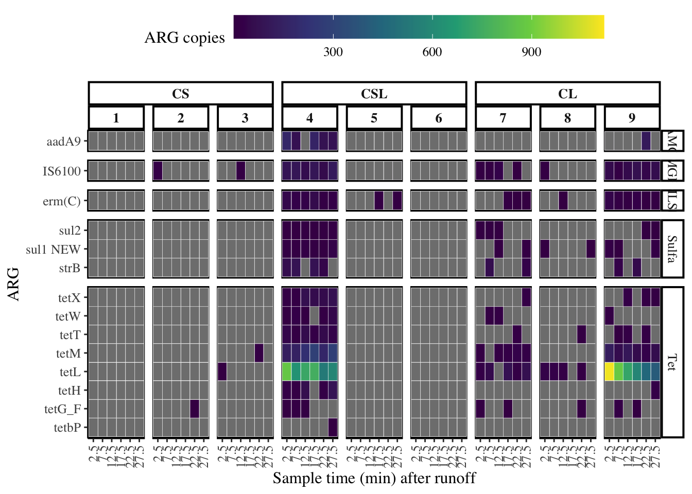
Filtered counts in water
waterwithlod <- waterdata %>%
left_join(lod_max_by_gene, by = c("Assay" = "Sample_Name"))
waterwithlod$norm[waterwithlod$Value >= waterwithlod$max_lod] <- NA
waterwithlod$counts[waterwithlod$Value >= waterwithlod$max_lod] <- NA
levels(waterwithlod$treatment) <- list("CS" = "WCS", "CSL" = "WCSM", "CL" = "WCM")Figure 4
#waterwithlod <- waterwithlod %>% mutate(Assay = str_replace(Assay, "tetG_F", "tetG"))
#waterwithlod %>%
# mutate(Assay = str_replace(Assay, "tetG_F", "tetG")) %>%
# count(Assay)
heatmap <- ggplot(waterwithlod, aes(as.factor(sample_number), ordered(Assay, levels = levels))) +
geom_tile(aes(fill = norm), colour = "white", size = 0.1) +
scale_fill_viridis_c(name = "ARG copies \nnormalized by 16S") +
labs(x = "Sample time (min) after runoff", y = "ARG") +
facet_nested(gene_class ~ treatment + plot, scales = "free", space = "free") + theme_classic() +
theme(
text = element_text(size = 12, family = "Times"),
panel.background = element_rect(color = 'black', size = 1.4),
strip.text.x = element_text(size = 10, face = 'bold'),
strip.background = element_rect(colour = 'black', size = 1.4),
axis.text.x = element_text(angle = 90, vjust = 0.5, hjust=1),
legend.position = "top",
legend.key.width = unit(.75, "in"))
heatmap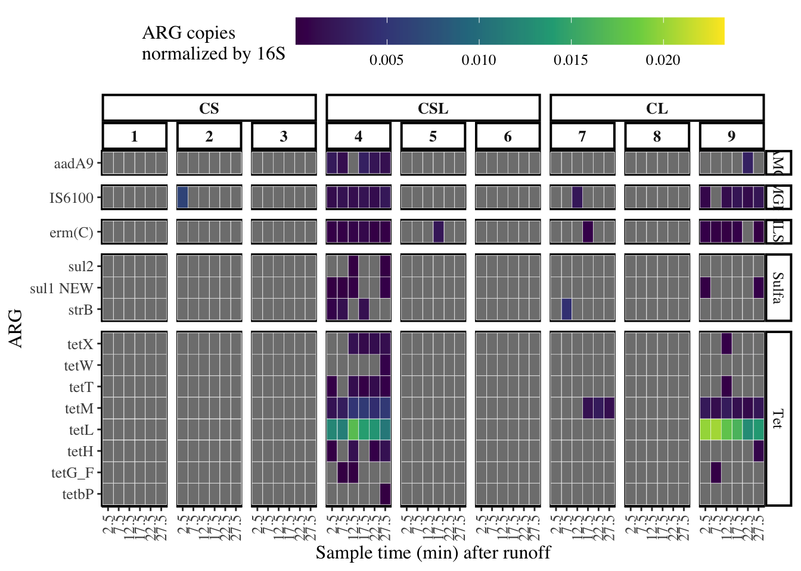
heatmap$data %>%
count(Assay)# A tibble: 14 x 2
Assay n
<chr> <int>
1 aadA9 198
2 erm(C) 198
3 IS6100 198
4 strB 198
5 sul1 NEW 198
6 sul2 198
7 tetbP 198
8 tetG_F 198
9 tetH 198
10 tetL 198
11 tetM 198
12 tetT 198
13 tetW 198
14 tetX 198- Astrik on manure ARGs ::: {.cell hash=“ManuscriptWalkthrough_cache/html/unnamed-chunk-74_304361dff4835c2df529ca1a354f2540”}
labels <- c(tetbP = "* tetbP ",
aphA3 = "* aphA3 ",
tetT = "* tetT ",
tetW = "* tetW ",
`erm(C)` = "* erm(C)",
tetX = "* tetX ",
tnpA1 = "* tnpA1 ",
tetH = "* tetH ",
lnuA = "* lnuA ",
tnpA5 = "* tnpA5 ",
tetM = "* tetM ",
cmr = "* cmr ",
tetG_F = "tetG ",
`sul1 NEW` = "sul1")
labels tetbP aphA3 tetT tetW erm(C) tetX tnpA1
"* tetbP " "* aphA3 " "* tetT " "* tetW " "* erm(C)" "* tetX " "* tnpA1 "
tetH lnuA tnpA5 tetM cmr tetG_F sul1 NEW
"* tetH " "* lnuA " "* tnpA5 " "* tetM " "* cmr " "tetG " "sul1" ::: ::: {.cell hash=“ManuscriptWalkthrough_cache/html/unnamed-chunk-76_c0215bc00ba722fc1308db7e652b55d6”}
heatmap +
scale_y_discrete(
name = NULL,
labels = labels
) 
ggsave(filename = "Figures/Fig4.jpeg", plot = last_plot(), device = "jpeg", units = "in", width = 7, height = 7.5, dpi = 350):::
ggplot(waterwithlod, aes(as.factor(sample_number), ordered(Assay, levels = levels))) +
geom_tile(aes(fill = counts), colour = "white", size = 0.1) +
scale_fill_viridis_c(name = "ARG copies") +
labs(x = "Sample time (min) after runoff", y = "ARG") +
facet_nested(gene_class ~ treatment + plot, scales = "free", space = "free") + theme_classic() +
theme(
text = element_text(size = 12, family = "Times"),
panel.background = element_rect(color = 'black', size = 1.4),
strip.text.x = element_text(size = 10, face = 'bold'),
strip.background = element_rect(colour = 'black', size = 1.4),
axis.text.x = element_text(angle = 90, vjust = 0.5, hjust=1),
legend.position = "top",
legend.key.width = unit(.75, "in"))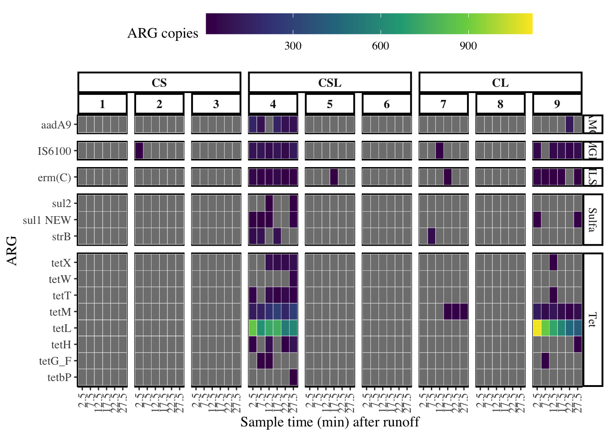
A few genes were detected in low enough quantities that they are no longer visible in the filtered data set. Overall, the results do not change much, but there are changes in pairwise significance for some genes that I need to evaluate further.
Supp Figure S3
soilwithlod <- soildata %>%
left_join(lod_max_by_gene, by = c("Assay" = "Sample_Name"))
soilwithlod$norm[soilwithlod$Value >= soilwithlod$max_lod] <- NA
soilwithlod$counts[soilwithlod$Value >= soilwithlod$max_lod] <- NA
levels(soilwithlod$treatment) <- list("CS" = "WCS", "CSL" = "WCSM", "CL" = "WCM")
heatmap2 <- ggplot(soilwithlod, aes(as.factor(sample_day), ordered(Assay, levels = levels))) +
geom_tile(aes(fill = norm), colour = "white", size = 0.1) +
scale_fill_viridis_c(name = "ARG copies \nnormalized by 16S") +
labs(x = "Sample day", y = "ARG") +
facet_nested(gene_class ~ treatment + plot, scales = "free", space = "free") + theme_classic() +
theme(
text = element_text(size = 12, family = "Times"),
panel.background = element_rect(color = 'black', size = 1.4),
strip.text.x = element_text(size = 10, face = 'bold'),
strip.background = element_rect(colour = 'black', size = 1.4),
axis.text.x = element_text(angle = 90, vjust = 0.5, hjust=1),
legend.position = "top",
legend.key.width = unit(.75, "in")
)
heatmap2 +
scale_y_discrete(
name = NULL,
labels = labels
) 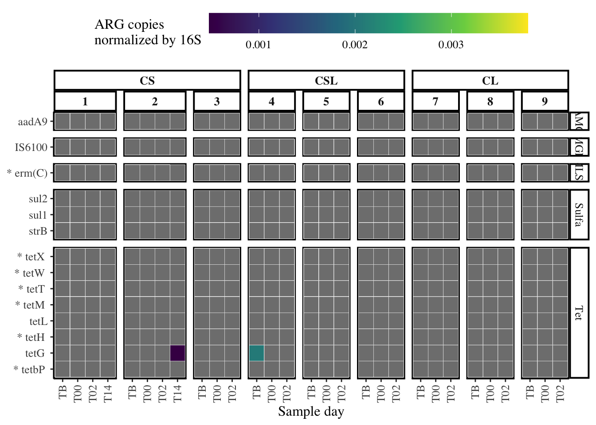
ggsave(filename = "Figures/SupFigS3.jpeg", plot = last_plot(), device = "jpeg", units = "in", width = 7, height = 7.5, dpi = 350)Supp Figure S4
This plot shows the flow rate for each sample from each plot.
If we plot MAB vs. flow, do prairie strips have an impact?
library(readxl)
mabbarplot$data Sample OTU Phylum Abundance p time
1: P1-1 Actinobacteria Actinobacteria 0.000000000 P1 1
2: P1-1 Bacteroidetes Bacteroidetes 0.000000000 P1 1
3: P1-1 Chloroflexi Chloroflexi 0.000000000 P1 1
4: P1-1 Cloacimonetes Cloacimonetes 0.000000000 P1 1
5: P1-1 Deinococcus-Thermus Deinococcus-Thermus 0.000000000 P1 1
---
659: P9-6 Proteobacteria Proteobacteria 0.007088626 P9 6
660: P9-6 Chloroflexi Chloroflexi 0.007844266 P9 6
661: P9-6 Planctomycetes Planctomycetes 0.008527941 P9 6
662: P9-6 Actinobacteria Actinobacteria 0.071893779 P9 6
663: P9-6 Firmicutes Firmicutes 0.205822029 P9 6
experiment matrix treatment plot sample_day depth in_plot_location
1: Worle_Rainfall water CS 1 T042 <NA> <NA>
2: Worle_Rainfall water CS 1 T042 <NA> <NA>
3: Worle_Rainfall water CS 1 T042 <NA> <NA>
4: Worle_Rainfall water CS 1 T042 <NA> <NA>
5: Worle_Rainfall water CS 1 T042 <NA> <NA>
---
659: Worle_Rainfall water CL 9 T042 <NA> <NA>
660: Worle_Rainfall water CL 9 T042 <NA> <NA>
661: Worle_Rainfall water CL 9 T042 <NA> <NA>
662: Worle_Rainfall water CL 9 T042 <NA> <NA>
663: Worle_Rainfall water CL 9 T042 <NA> <NA>
block strip manure_treatment soil_type
1: 1 Y N border
2: 1 Y N border
3: 1 Y N border
4: 1 Y N border
5: 1 Y N border
---
659: 3 N Y border
660: 3 N Y border
661: 3 N Y border
662: 3 N Y border
663: 3 N Y borderflow <- read_excel("Data/WOR_Water_flow.xlsx")
glimpse(flow)Rows: 54
Columns: 8
$ plot <dbl> 1, 1, 1, 1, 1, 1, 2, 2, 2, 2, 2, 2, 3, 3, 3, 3…
$ treatment <chr> "CS", "CS", "CS", "CS", "CS", "CS", "CS", "CS"…
$ sample_number <dbl> 1, 2, 3, 4, 5, 6, 1, 2, 3, 4, 5, 6, 1, 2, 3, 4…
$ time_after_runoff_start <dbl> 2.5, 7.5, 12.5, 17.5, 22.5, 27.5, 2.5, 7.5, 12…
$ collection_time_sec <dbl> 210, 210, 150, 120, 75, 75, 180, 150, 135, 120…
$ jare_tare_wt_g <dbl> 88, 88, 88, 88, 88, 88, 87, 88, 88, 88, 88, 88…
$ jare_plus_runoff_wt_g <dbl> 919, 906, 996, 1067, 1027, 993, 731, 772, 859,…
$ `flow_g/s` <dbl> 3.957143, 3.895238, 6.053333, 8.158333, 12.520…flow$sample_number <- as.character(flow$sample_number)ggplot(flow, aes(x = as.factor(sample_number), y = `flow_g/s`, group = as.factor(plot))) +
geom_line(position = position_dodge(width = .3)) +
geom_point(aes(color = as.factor(treatment)), position = position_dodge(width = .3), size = 5) +
geom_text(aes(label = plot), position = position_dodge(width = .3), show.legend = F) +
theme_classic() +
theme(
legend.position = "top",
panel.background = element_rect(color = 'black', size = 1.4),
strip.text.x = element_text(size = 10, face = 'bold'),
strip.background = element_rect(colour = 'black', size = 1.4),
axis.text.x = element_text(angle = 0, vjust = 0, hjust = 0.5)) +
scale_color_viridis_d() +
labs(x = "Time after runoff start (min)", y = "Flow (mL/s)", color = "Treatment \n(points labeled with plot)") +
scale_x_discrete(labels = c("1" = "2.5", "2" = "7.5", "3" = "12.5", "4" = "17.5", "5" = "22.5", "6" = "27.5"))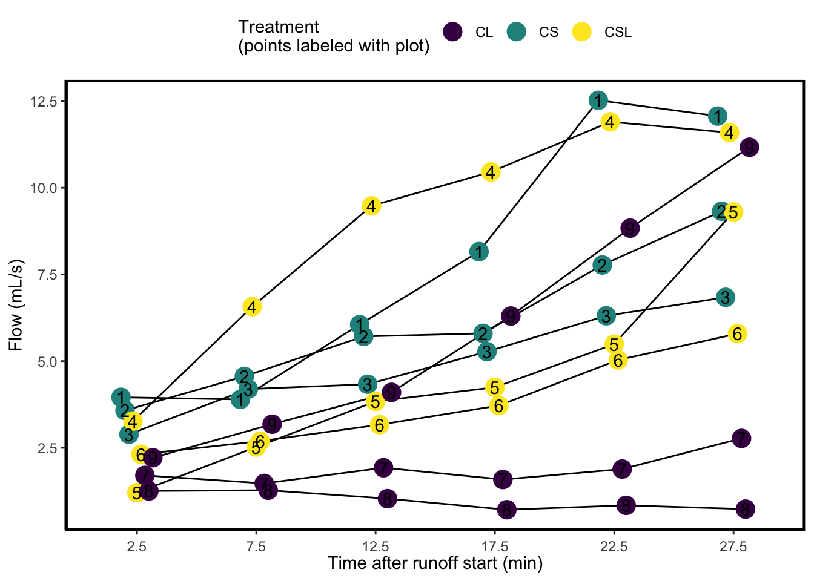
ggsave(filename = "Figures/SupFig4.png", plot = last_plot(), device = "png", width = 6.5, height = 7.5, units = "in", dpi = 350)Supp Figure S5
SixS <- norm %>%
filter(Assay == "16S_Eub_338_518")
SixS# A tibble: 198 x 8
plot sample_number rep treatment Assay gene_class counts Value
<chr> <chr> <int> <chr> <chr> <chr> <dbl> <chr>
1 2 5 1 WCS 16S_Eub_33… 16S 844. 18.3926544…
2 2 5 2 WCS 16S_Eub_33… 16S 858. 18.3668106…
3 2 5 3 WCS 16S_Eub_33… 16S 1308. 17.7039409…
4 2 3 1 WCS 16S_Eub_33… 16S 715. 18.6550587…
5 2 3 2 WCS 16S_Eub_33… 16S 733. 18.6149361…
6 2 3 3 WCS 16S_Eub_33… 16S 1173. 17.8757951…
7 2 1 1 WCS 16S_Eub_33… 16S 3359. 16.2208645…
8 2 1 2 WCS 16S_Eub_33… 16S 3564. 16.1278807…
9 2 1 3 WCS 16S_Eub_33… 16S 4399. 15.7965356…
10 1 5 1 WCS 16S_Eub_33… 16S NA <NA>
# … with 188 more rowsSixS$treatment = factor(SixS$treatment,
levels = c('WCS', 'WCSM', 'WCM'))
levels(SixS$treatment) <- list("CS"="WCS", "CSM"="WCSM", "CM"="WCM")
SixS$sample_number <- as.factor(SixS$sample_number)
levels(SixS$sample_number) <- list("2.5" = "1", "7.5" = "2", "12.5" = "3", "17.5" = "4", "22.5" = "5", "27.5" = "6")
my_comparisons <- list( c("WCS", "WCSM"), c("WCS", "WCM"), c("WCM", "WCSM"))
sig <- SixS %>%
filter(!rep %in% c(4,5,6)) %>%
droplevels()
sig# A tibble: 162 x 8
plot sample_number rep treatment Assay gene_class counts Value
<chr> <fct> <int> <fct> <chr> <chr> <dbl> <chr>
1 2 22.5 1 CS 16S_Eub_33… 16S 844. 18.3926544…
2 2 22.5 2 CS 16S_Eub_33… 16S 858. 18.3668106…
3 2 22.5 3 CS 16S_Eub_33… 16S 1308. 17.7039409…
4 2 12.5 1 CS 16S_Eub_33… 16S 715. 18.6550587…
5 2 12.5 2 CS 16S_Eub_33… 16S 733. 18.6149361…
6 2 12.5 3 CS 16S_Eub_33… 16S 1173. 17.8757951…
7 2 2.5 1 CS 16S_Eub_33… 16S 3359. 16.2208645…
8 2 2.5 2 CS 16S_Eub_33… 16S 3564. 16.1278807…
9 2 2.5 3 CS 16S_Eub_33… 16S 4399. 15.7965356…
10 1 22.5 1 CS 16S_Eub_33… 16S NA <NA>
# … with 152 more rowsp <- ggplot(sig, aes(x=treatment, y=counts, fill = treatment)) +
geom_boxplot() +
labs(x = "Treatment", y = "Log 10 gene 16s copies") +
scale_y_continuous(trans = 'log10') +
scale_fill_viridis_d() +
facet_wrap( ~ sample_number) +
theme_pubr() +
theme(
legend.background = element_rect(
fill = (alpha = 0),
color = 'black',
size = 0.1),
panel.background = element_rect(color = 'black', size = 1.4),
strip.text.x = element_text(size = 10, face = 'bold'),
strip.background = element_rect(colour = 'black', size = 1.4),
legend.position = "none")
p 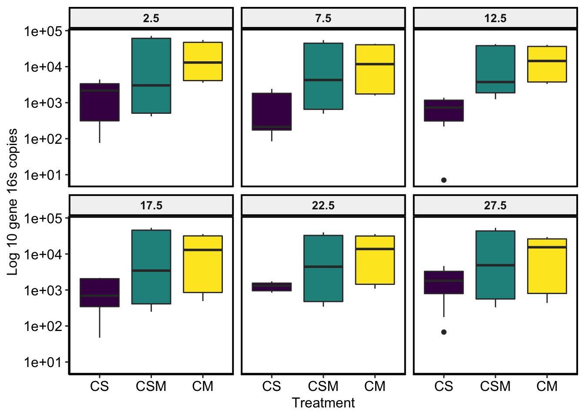
krusk.test <- sig %>%
group_by(sample_number) %>%
kruskal_test(counts ~ treatment)
krusk.test# A tibble: 6 x 7
sample_number .y. n statistic df p method
* <fct> <chr> <int> <dbl> <int> <dbl> <chr>
1 2.5 counts 27 9.00 2 0.0111 Kruskal-Wallis
2 7.5 counts 27 9.43 2 0.00895 Kruskal-Wallis
3 12.5 counts 27 17.0 2 0.000206 Kruskal-Wallis
4 17.5 counts 27 5.66 2 0.0591 Kruskal-Wallis
5 22.5 counts 27 3.41 2 0.182 Kruskal-Wallis
6 27.5 counts 27 4.02 2 0.134 Kruskal-Wallisstat.test <- sig %>%
group_by(sample_number) %>%
dunn_test(counts ~ treatment) %>%
adjust_pvalue(method = "hochberg") %>%
mutate(y.position = rep(c(log10(100000), log10(300000), log10(1000000)), 6))
stat.test# A tibble: 18 x 11
sample_number .y. group1 group2 n1 n2 statistic p p.adj
* <fct> <chr> <chr> <chr> <int> <int> <dbl> <dbl> <dbl>
1 2.5 counts CS CSM 9 9 1.46 0.146 0.878
2 2.5 counts CS CM 9 9 3.00 0.00271 0.0433
3 2.5 counts CSM CM 9 9 1.54 0.123 0.878
4 7.5 counts CS CSM 8 9 2.52 0.0117 0.163
5 7.5 counts CS CM 8 9 2.82 0.00478 0.0717
6 7.5 counts CSM CM 9 9 0.308 0.758 0.878
7 12.5 counts CS CSM 9 9 3.18 0.00149 0.0253
8 12.5 counts CS CM 9 9 3.86 0.000113 0.00204
9 12.5 counts CSM CM 9 9 0.683 0.495 0.878
10 17.5 counts CS CSM 8 9 1.82 0.0693 0.693
11 17.5 counts CS CM 8 9 2.26 0.0235 0.306
12 17.5 counts CSM CM 9 9 0.462 0.644 0.878
13 22.5 counts CS CSM 6 9 1.27 0.205 0.878
14 22.5 counts CS CM 6 9 1.83 0.0667 0.693
15 22.5 counts CSM CM 9 9 0.633 0.527 0.878
16 27.5 counts CS CSM 8 9 1.67 0.0941 0.847
17 27.5 counts CS CM 8 9 1.82 0.0682 0.693
18 27.5 counts CSM CM 9 9 0.154 0.878 0.878
# … with 2 more variables: p.adj.signif <chr>, y.position <dbl>p <- ggboxplot(sig, x = "treatment", y = "counts", facet.by = "sample_number") +
scale_y_continuous(trans = "log10")
options(scipen = 5)
p +
stat_pvalue_manual(stat.test, hide.ns = T) +
theme_pubr() +
labs(x = "Treatment", y = "Log 10 gene 16s copies",
caption = get_pwc_label(stat.test)) +
scale_x_discrete(labels = c("CSM" = "CSL", "CM" = "CL"))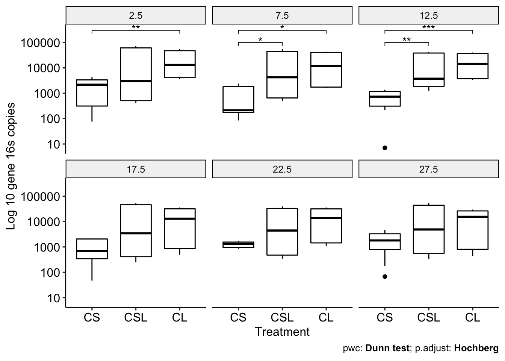
ggsave(filename = "Figures/SuppFiggS5.png", plot = last_plot(), device = "png", units = "in", width = 6.5, height = 7.5, dpi = 300)Supp Figure S6
df <- mabbarplot$data %>%
group_by(plot, time) %>%
mutate(SumAbund = sum(Abundance)) %>%
rename(sample_number = time) %>%
ungroup() %>%
left_join(flow, by = c("plot", "sample_number")) %>%
select(treatment.x, plot, sample_number, SumAbund, time_after_runoff_start, collection_time_sec, jare_tare_wt_g, jare_plus_runoff_wt_g, `flow_g/s`)
write_excel_csv(df, file = "Data/water_flow_with_MAB.csv")
lmplot <- df %>%
filter(!treatment.x == "CS") %>%
ggplot(aes(x = `flow_g/s`, y = SumAbund, color = treatment.x)) +
geom_point() +
geom_smooth(method = lm, se = FALSE) +
scale_color_manual(values = c("darkgreen", "tan4"), name = "Treatment") +
theme_bw()
lmplot`geom_smooth()` using formula 'y ~ x'
# Two seperate lm's to calculated where they intersect
CM <- df %>%
filter(!treatment.x %in% c("CS", "CSL")) %>%
lm(SumAbund ~ `flow_g/s`, data = .)
summary(CM)$r.squared[1] 0.5325833summary(CM)$adj.r.squared[1] 0.5305686CSM <- df %>%
filter(!treatment.x %in% c("CS", "CL")) %>%
lm(SumAbund ~ `flow_g/s`, data = .)
summary(CSM)$r.squared[1] 0.5541166summary(CSM)$adj.r.squared[1] 0.5521947# where do the two lines intersect?
cm <- rbind(coef(CM),coef(CSM)) # Coefficient matrix
c(-solve(cbind(cm[,2],-1)) %*% cm[,1])[1] 7.373952 0.286310lmplot <- df %>%
filter(!treatment.x == "CS") %>%
ggplot(aes(x = `flow_g/s`, y = SumAbund, color = treatment.x)) +
geom_point() +
geom_smooth(method = lm, se = FALSE) +
geom_point(x = 7.373952, y = 0.286310, color = "black") +
annotate("text", x = 8.1, y = 0.24, label = "7.37 (mL/s)") +
stat_cor(aes(label = paste(..rr.label.., ..p.label.., sep = "~`,`~")),
label.x = 3, show.legend = F) +
labs(x = "Flow (mL/s)", y = "Relative abundance (%)") +
scale_y_continuous(labels = function(x) paste0(x*100, "%")) +
annotate("segment", x = 7.373952, xend = 7.6, y = 0.286310, yend = 0.26,
colour = "black") +
scale_color_manual(name = "Treatment", labels = c("CSL", "CL"), values = c("darkgreen", "tan4")) +
theme_bw()
lmplot`geom_smooth()` using formula 'y ~ x'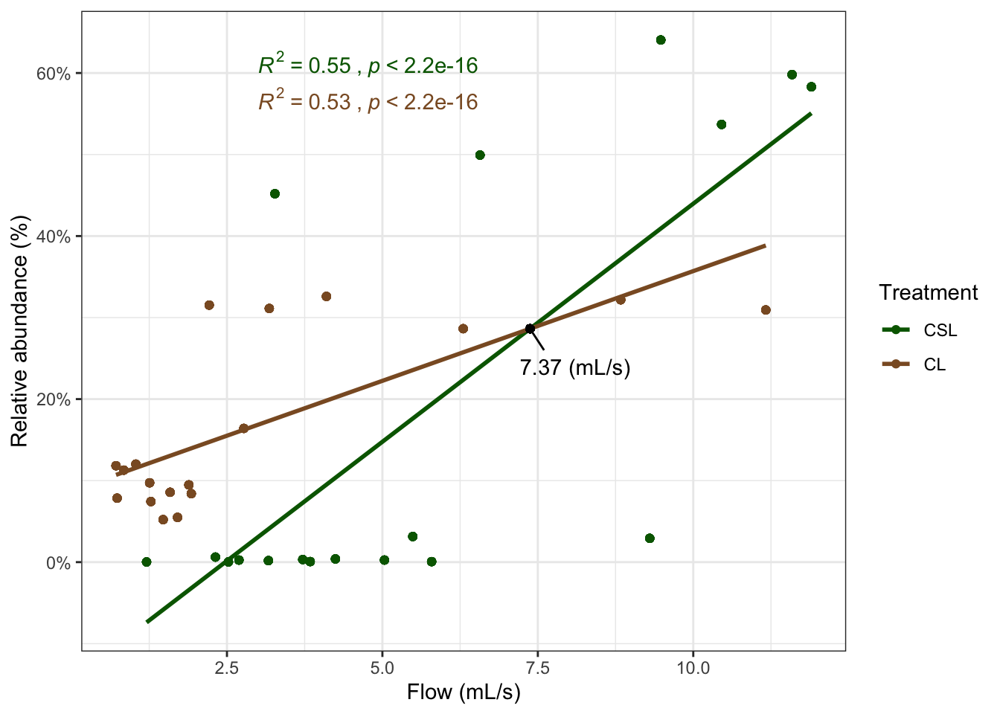
ggsave(filename = "Figures/SupFig6.png", plot = last_plot(), device = "png", width = 6.5, height = 7.5, units = "in", dpi = 350)`geom_smooth()` using formula 'y ~ x'Supp Figure S7
If we plot MAB vs. flow, do prairie strips have an impact?
Look at differences in sample volume, time to collect ::: {.cell hash=“ManuscriptWalkthrough_cache/html/unnamed-chunk-96_66549b02ddee0c0a1f13b5db9ce4e20e”}
colnames(df)[1] "treatment.x" "plot"
[3] "sample_number" "SumAbund"
[5] "time_after_runoff_start" "collection_time_sec"
[7] "jare_tare_wt_g" "jare_plus_runoff_wt_g"
[9] "flow_g/s" ggplot(df, aes(x = as.factor(sample_number), y = collection_time_sec, fill = as.factor(plot))) +
geom_bar(stat = "identity", position = "dodge") +
facet_grid(~ treatment.x) +
ggtitle("Sample Collection time")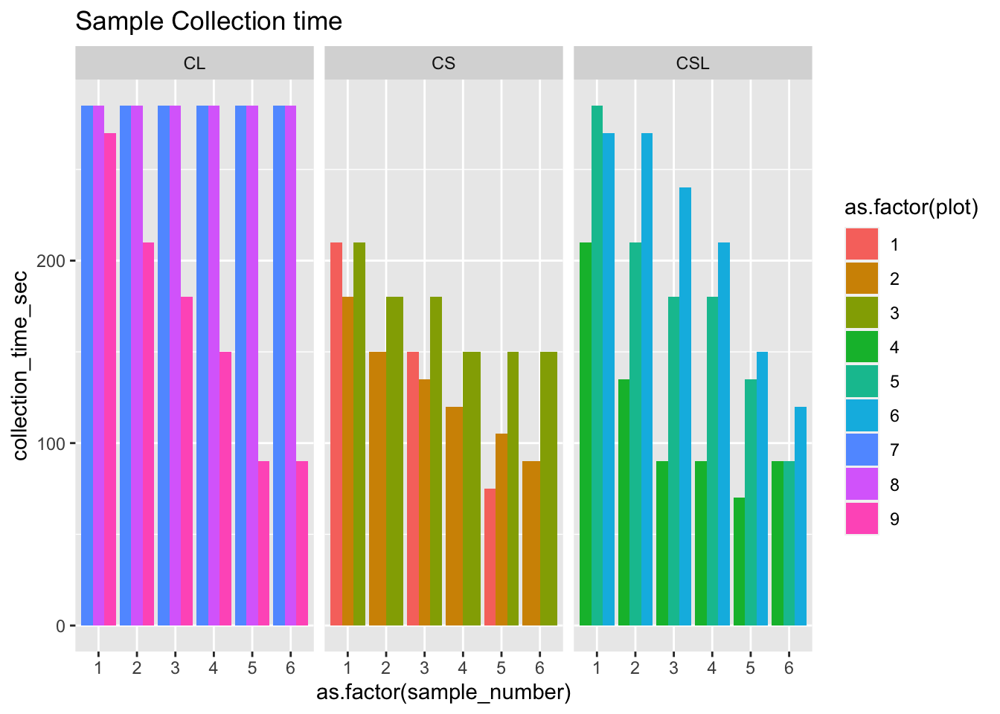
ggplot(df, aes(x = as.factor(sample_number), y = jare_plus_runoff_wt_g - jare_tare_wt_g, fill = as.factor(plot))) +
geom_bar(stat = "identity", position = "dodge") +
facet_grid(~ treatment.x) +
ggtitle("Sample Volume")
:::
A simple scatter plot looking at flow vs abundance, with a lm line fitted to each treatment.
[1] "numeric"`geom_smooth()` using formula 'y ~ x'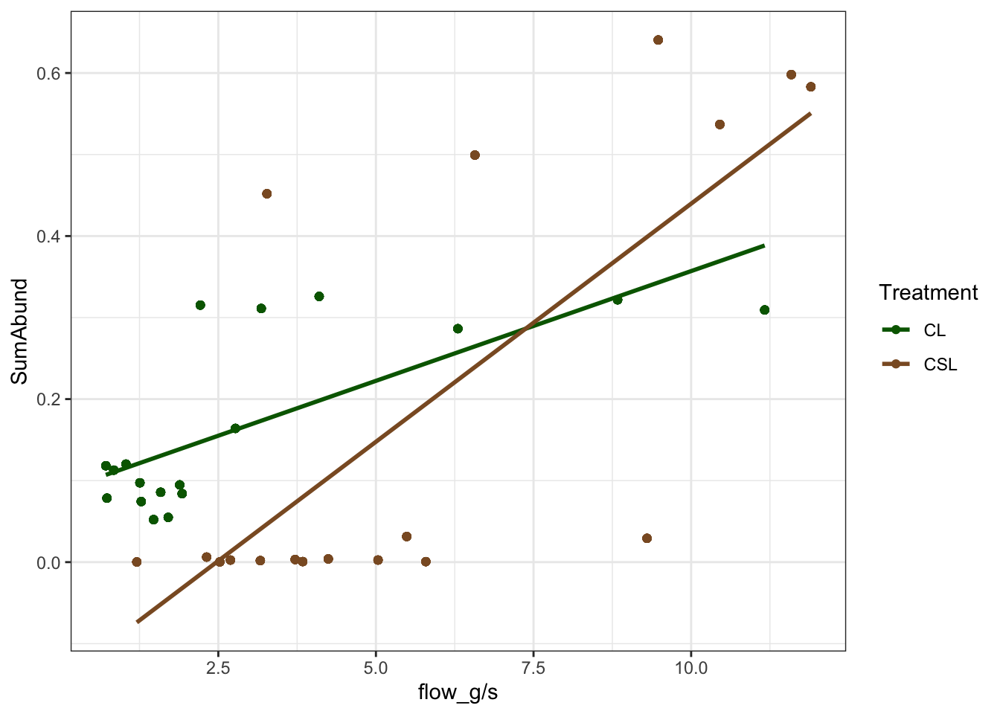
It appears that up to a flow of 7.5 g/s, strips may be effective at removing MAB in runoff water when compared to if no strips are present.
Calculate corrected (cor) MAB abundance by dividing MAB abundance by flow in each sample. Then calculate the treatment mean, sd, se and interquartile.
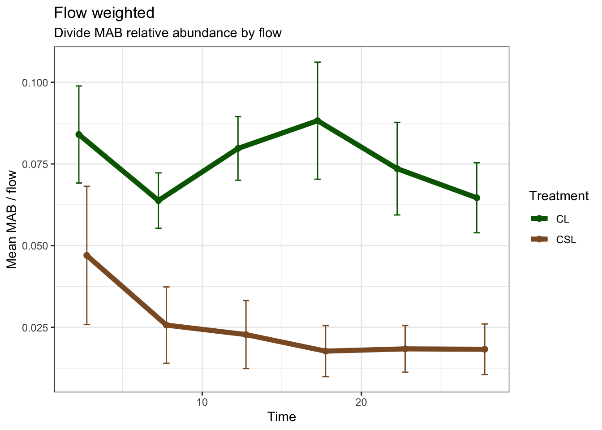
Here, despite the error bars, we have indications that when strips are present, there is less MAB in runoff water.
Event mean concentration (EMC)
EMC calculation
For a plot we have
6 water samples
Mass (vol) of water collected at each sample
Time to collect each sample
Count of ARGs filtered out of sample
The calculation
Event load (EL)
\[ =\frac{{T1ARGConc}*{T1Vol}+{T2ARGConc}*{T2Vol}+{T3ARGConc}*{T3Vol}+{T4ARGConc}*{T4Vol}+{T5ARGConc}*{T5Vol}+{T6ARGConc}*{T6Vol}}{Event TotalVol} \]
watervols <- df %>%
select(treatment.x, plot, sample_number, time_after_runoff_start, collection_time_sec, jare_tare_wt_g, jare_plus_runoff_wt_g, `flow_g/s`) %>%
mutate(sample_volume = jare_plus_runoff_wt_g - jare_tare_wt_g)–> –> –>
–> –> –> –> –> –>
–> –> –> –>
–> –> –>
–> –> –> –>
–>
–> –> –> –> –> –> –> –> –> –> –> –> –> –> –> –> –> –> –> –> –> –> –> –> –> –>
–>
–> –>
–> –>
–>
–> –> –> –> –> –> –> –> –> –> –> –> –> –> –> –> –>
–> –>
–>
–>
–>
–> –> –> –>
–> –> –> –> –> –> –> –> –> –> –> –> –> –> –>
–> –> –> –>
–> –> –> –> –> –> –> –>
–> –>
–> –> –> –> –> –> –>
–> –>
–> –> –> –> –> –> –> –> –> –>
–> –>
–> –>
–>
–> –> –> –> –> –> –> –> –> –> –> –> –> –> –> –> –> –> –> –> –> –> –> –> –> –> –> –>
–>
–>
–> –> –>
–>
–> –> –>
–> –> –>
–>
–>
–> –> –> –> –> –> –> –>
–> –> –> –>
–> –>
–> –> –>
–>
–> –> –>
–> –> –>
–>
–>
–> –> –> –> –> –> –> –>
–> –> –> –> –> –> –> –> –>
–> –> –>
–>
–>
–> –> –> –> –> –> –> –> –>
–> –> –> –> –> –>
–> –>
–>